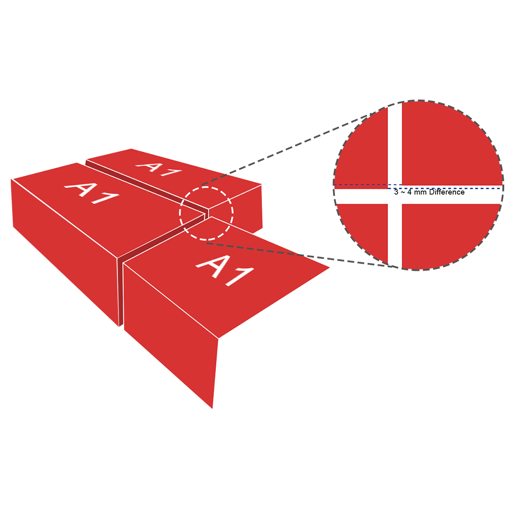

It is important that all the bricks are of uniform size so that while placing them they form a strong grid holding the building structure firmly. The standard size of Brick is LxBxH.
Flatness ensures that adhesives are applied effectively and cement reaches all the nooks and corners effectively. Standard deviation can be a maximum of 2 to 3 mm.
Compression strength is a very important factor determining how well the bricks can handle the pressure. This factors also helps in deciding how effectively the building can withstand harsh weathers and natural calamities. Standard compressive strength of Brick is —Kgs. Real Bricks certificate from NPL.
The thorough inspection of our final products helps us in making sure that bricks are of the finest quality and hence Real Bricks can assure you that each brick of ours will make your house only stronger and sturdier.